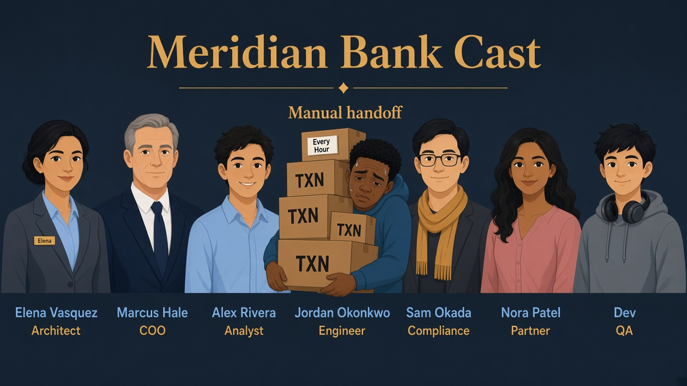
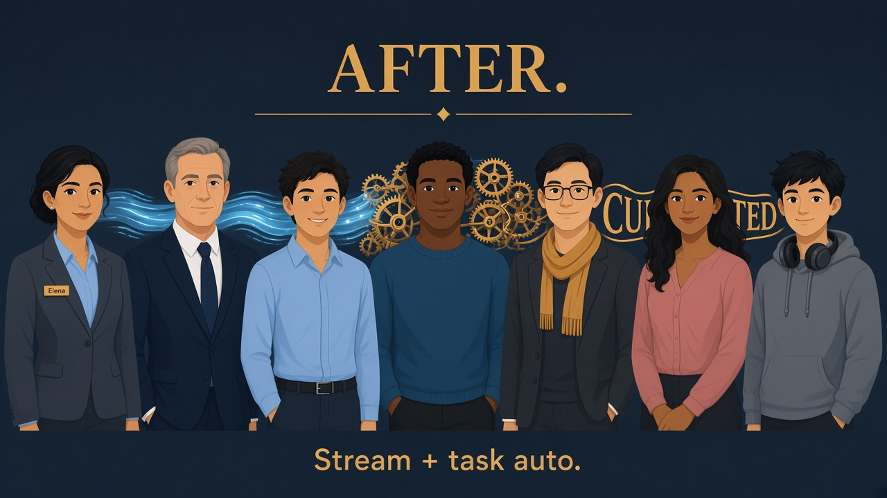

Lab 05 · Thursday · You are Elena · Jordan’s hourly chore
Automate curated CDC from LANDING
Read every Teach first section before SQL.
Jordan manually copied new txns every hour. You’ll wire a stream (change notebook) and a task (scheduled worker) into CURATED.TXN_SILVER_CDC,
then compare Snowflake-native options with dbt from Lab 02.
Business problem
Near-real-time risk dashboards need curated rows minutes after landing — not when Jordan remembers to run INSERT…SELECT.
Solution you will build
Stream LANDING.TXN_EVENTS_STR + task CURATED.TASK_TXN_CDC on WH_BANK_XS, triggered when the stream has data — then suspend the task so credits stay sane.

Before
Jordan hand-carries txns — hourly INSERT…SELECT chore.

After
Stream + task — auto when the notebook has rows.
See it — don’t memorize definitions
Stream = change notebook. Task = worker that runs only when notebook has pages.
Stream
TXN_EVENTS_STR
What changed on the dock since last consume.
APPEND_ONLY inserts new txn ids in stream
Task
TASK_TXN_CDC
Runs MERGE/INSERT when stream has data.
WHEN SYSTEM$STREAM_HAS_DATA(...) → CURATED.TXN_SILVER_CDC
This lab: stream+task — Jordan sees every line of INSERT logic in Snowsight.
Optional Step 2: dynamic table for “Snowflake owns refresh.”
Lab 02 already did: dbt when Git, tests, and portable SQL matter more than native scheduling.
Thursday standup
Jordan: “Can Snowflake tell me what changed?” Elena: “Streams bookmark deltas; tasks run the load path when the bookmark has unread rows.”
0
Privilege repair (if policies or tasks fail)
When you need this
Marcus escalated: “Elena’s role can’t run tasks.” Only ACCOUNTADMIN can stamp EXECUTE TASK and related grants. Skip if Lab 00 bootstrap already succeeded.
SQL · repair (1/3) · as ACCOUNTADMIN
USE ROLE ACCOUNTADMIN;
GRANT CREATE ROLE ON ACCOUNT TO ROLE ROLE_BANK_LAB_ADMIN;
GRANT USAGE ON WAREHOUSE WH_BANK_XS TO ROLE ROLE_BANK_LAB_ADMIN WITH GRANT OPTION;
GRANT OPERATE ON WAREHOUSE WH_BANK_XS TO ROLE ROLE_BANK_LAB_ADMIN WITH GRANT OPTION;
SQL · repair (2/3) · policy + task + share
GRANT APPLY MASKING POLICY ON ACCOUNT TO ROLE ROLE_BANK_LAB_ADMIN;
GRANT APPLY ROW ACCESS POLICY ON ACCOUNT TO ROLE ROLE_BANK_LAB_ADMIN;
GRANT EXECUTE TASK ON ACCOUNT TO ROLE ROLE_BANK_LAB_ADMIN;
GRANT CREATE SHARE ON ACCOUNT TO ROLE ROLE_BANK_LAB_ADMIN;
SQL · repair (3/3) · user + smoke + schemas
SET uname = (SELECT CURRENT_USER());
GRANT ROLE ROLE_BANK_LAB_ADMIN TO USER IDENTIFIER($uname);
USE ROLE ROLE_BANK_LAB_ADMIN;
CREATE ROLE IF NOT EXISTS ROLE_BANK_SMOKE_TMP COMMENT = 'temp smoke test';
DROP ROLE IF EXISTS ROLE_BANK_SMOKE_TMP;
USE DATABASE MERIDIAN_BANK;
CREATE SCHEMA IF NOT EXISTS LANDING;
CREATE SCHEMA IF NOT EXISTS CURATED;
CREATE SCHEMA IF NOT EXISTS RISK_CTRL;
CREATE SCHEMA IF NOT EXISTS FINANCE_MART;
CREATE SCHEMA IF NOT EXISTS FILE_IN;
CREATE SCHEMA IF NOT EXISTS UTILS;
SELECT 'Meridian Bank privilege repair OK' AS status;
✓ Status row — matches sql/00_privilege_repair.sql
1
Session + curated target table
What TXN_SILVER_CDC is
Append-only curated copy fed by the task — not the same object as Lab 04’s SILVER_TXNS CTAS, but same idea: rows leave LANDING via automation.
SQL · context
USE ROLE ROLE_BANK_LAB_ADMIN;
USE WAREHOUSE WH_BANK_XS;
USE DATABASE MERIDIAN_BANK;
USE SCHEMA CURATED;
ON TABLE LANDING.TXN_EVENTS — requires Lab 02 source table. APPEND_ONLY = TRUE matches insert-only dock behavior in this lab.
SQL · LANDING.TXN_EVENTS_STR
CREATE OR REPLACE STREAM LANDING.TXN_EVENTS_STR
ON TABLE LANDING.TXN_EVENTS APPEND_ONLY = TRUE;
✓ Stream visible under LANDING — no rows consumed yet
3
Define the worker (task)
Read the task header
SCHEDULE uses a far-future cron so the task is legal but idle; WHEN + EXECUTE TASK drive the lab proof.
Body reads from the stream, not the base table — that’s how you process only deltas.
SQL · TASK_TXN_CDC (definition)
CREATE OR REPLACE TASK CURATED.TASK_TXN_CDC
WAREHOUSE = WH_BANK_XS
SCHEDULE = 'USING CRON 0 0 1 1 * UTC'
WHEN SYSTEM$STREAM_HAS_DATA('LANDING.TXN_EVENTS_STR')
AS
INSERT INTO CURATED.TXN_SILVER_CDC (TXN_ID, CLIENT_ID, STATUS, AMOUNT, UPDATED_AT)
SELECT TXN_ID, CLIENT_ID, STATUS, AMOUNT, UPDATED_AT FROM LANDING.TXN_EVENTS_STR;
✓ Task created (starts suspended until RESUME)
4
Resume the task
Why RESUME?
New tasks are suspended by default — resume so EXECUTE TASK can run the body when the stream has data.
SQL · enable task
ALTER TASK CURATED.TASK_TXN_CDC RESUME;
✓ Task state = started (check Data → Tasks)
5
Lab proof — one txn through the pipe
Story of txn 1099
Clean slate for 1099 in curated and landing, insert fresh row at dock, manually execute task, verify curated row — same sequence as sql/05_streams_tasks.sql.
SQL · reset 1099
DELETE FROM CURATED.TXN_SILVER_CDC WHERE TXN_ID = 1099;
DELETE FROM LANDING.TXN_EVENTS WHERE TXN_ID = 1099;
SQL · insert at dock
INSERT INTO LANDING.TXN_EVENTS VALUES (1099, 1, 'POSTED', 1.00, CURRENT_TIMESTAMP());
SQL · run worker once
EXECUTE TASK CURATED.TASK_TXN_CDC;
SQL · verify curated
SELECT * FROM CURATED.TXN_SILVER_CDC WHERE TXN_ID = 1099;
✓ One row for 1099 with LOADED_AT populated
6
Suspend the task (don’t leave workers running)
Why suspend at the end?
Interview hygiene: prove automation works, then stop background warehouse use in a shared lab account.
SQL · suspend + status
ALTER TASK CURATED.TASK_TXN_CDC SUSPEND;
SELECT 'Lab 05 OK — task suspended' AS status;
✓ Status message · task shows suspended in Snowsight
7
Optional: dynamic table pattern
When Elena picks dynamic tables
Snowflake-managed refresh with TARGET_LAG — great when dbt isn’t owning the DAG. Jordan’s stream+task stays explicit SQL in the bank ops path.
SQL · context
USE ROLE ROLE_BANK_LAB_ADMIN;
USE WAREHOUSE WH_BANK_XS;
USE DATABASE MERIDIAN_BANK;
USE SCHEMA CURATED;
SQL · DT_TXN_STATUS
CREATE OR REPLACE DYNAMIC TABLE DT_TXN_STATUS
TARGET_LAG = 'DOWNSTREAM'
WAREHOUSE = WH_BANK_XS
AS
SELECT TXN_ID, STATUS, UPDATED_AT FROM LANDING.TXN_EVENTS;
SQL · peek dynamic table
SELECT * FROM DT_TXN_STATUS ORDER BY TXN_ID LIMIT 10;
✓ Rows mirror LANDING — refresh managed by Snowflake
Elena’s wrap-up (say this out loud)
“Meridian couldn’t rely on Jordan’s calendar. I added a stream on LANDING.TXN_EVENTS — a change notebook — and task TASK_TXN_CDC that INSERTs from the stream into CURATED.TXN_SILVER_CDC when SYSTEM$STREAM_HAS_DATA is true.
We proved txn 1099 end-to-end, then suspended the task so the warehouse isn’t always on.
Compared to Lab 02 dbt incremental: dbt owns Git and MERGE semantics; stream+task keeps orchestration visible in Snowflake; dynamic tables trade explicit SQL for TARGET_LAG refresh.
Outcome: automated near-real-time curated rows with a clean shutdown.”